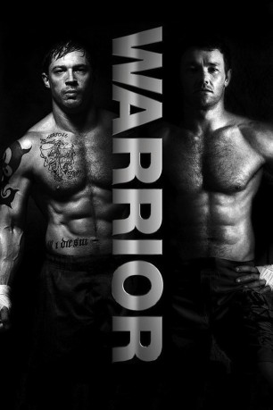

#687 Warrior
Auszeichnungen: für 1 Oscars nominiert
 
 IMDB-Wertung: 8.2 / 10
IMDB-Wertung: 8.2 / 10  IMDB-TOP-Platzierung: 154
IMDB-TOP-Platzierung: 154  Metascore: 71
Metascore: 71 
Jahre, nachdem er seinen gewalttätigen Vater verlassen hatte, kehrt Tommy nach Pittsburgh zurück. Er hat die Mutter bis zu ihrem Tod gepflegt, war danach Soldat im Irak und steht nun wieder vor der Tür. Tommys älterer Bruder Brendan ist daheim geblieben. Er hat eine Familie gegründet und sich eine Existenz als Lehrer aufgebaut. Als die Banken ihm auf den Pelz rücken, sieht er seine einzige Chance darin, wieder in den Mixed-Martial-Arts-Ring zu steigen. Bei einem großen Turnier steht er Tommy wieder gegenüber.
Jahr: 2011
Dauer: 140 Minuten
FSK: 16
Land: USA Studio: LionsgateTonspuren: DTS - ,
Untertitel: Deutsch,
Auflösung: 1080p (1920x800) Größe: 16281 MB
Genre: Drama, Sport
Regisseur: Gavin O'Connor
Drehbuch: Gavin O'Connor, Anthony Tambakis, Cliff Dorfman, Gavin O'Connor, Cliff Dorfman
Soundtrack: Mark Isham
Darsteller:
 Joel Edgerton als Brendan Conlon
Joel Edgerton als Brendan Conlon Tom Hardy als Tommy Conlon
Tom Hardy als Tommy Conlon Nick Nolte als Paddy Conlon
Nick Nolte als Paddy Conlon Jennifer Morrison als Tess Conlon
Jennifer Morrison als Tess Conlon Frank Grillo als Frank Campana
Frank Grillo als Frank Campana Kevin Dunn als Principal Zito
Kevin Dunn als Principal Zito Maximiliano Hernández als Colt Boyd
Maximiliano Hernández als Colt Boyd Bryan Callen als Bryan Callen
Bryan Callen als Bryan Callen Fernando Chien als Fenroy
Fernando Chien als Fenroy Jake McLaughlin als Mark Bradford
Jake McLaughlin als Mark Bradford- Vanessa Martinez als Pilar Fernandez
 Denzel Whitaker als Stephon
Denzel Whitaker als Stephon- Carlos Miranda als Tito
- Manuel Espinosa als Warden Perez
- Laura Chinn als KC
- Lexi Cowan als Rosie Conlon
 Noah Emmerich als Dan Taylor
Noah Emmerich als Dan Taylor- Dan Caldwell als Dan Caldwell
- Kurt Angle als Koba
- Daniel Stevens als Francisco Barbosa
- Panuvat Anthony Nanakornpanom als Sun Chu
 Hans Marrero als Diego Santana
Hans Marrero als Diego Santana- Amir Perets als Yosi
- Anthony Tambakis als Sparta Official
- Jace Jeanes als Mike 'The Mutilator' Moore
 Richard Fike als Tender Trap Referee
Richard Fike als Tender Trap Referee- Aaron Kleiber als Koba Entourage #1
- Armon York Williams als Marine MP #2
 Robert Bizik als Atlantic City Gambler , uncredited
Robert Bizik als Atlantic City Gambler , uncredited Jason Botsford als Ringside Audience , uncredited
Jason Botsford als Ringside Audience , uncredited- Chad Bruns als Colt's Gym Fighter , uncredited
- Kevin Christy als Max Hall , uncredited
 Mark Falvo als Fight Spectator , uncredited
Mark Falvo als Fight Spectator , uncredited Joe Fishel als Fight Spectator , uncredited
Joe Fishel als Fight Spectator , uncredited- Marki Henderson als Ringside Fight Fan , uncredited
 William Kania als Red Carpet Photographer , uncredited
William Kania als Red Carpet Photographer , uncredited William James Kelly als Casino Gambler , uncredited
William James Kelly als Casino Gambler , uncredited- Brian Knoebel als Student , uncredited
- Nick Marcucci als Student , uncredited
- Ed McKeever als Atlantic City VIP , uncredited
 Roman Mitichyan als Russian Commentator , uncredited
Roman Mitichyan als Russian Commentator , uncredited- Rick Montgomery Jr. als Ringsider Reporter , uncredited
 Phil Nardozzi als AA Meeting attendee , uncredited
Phil Nardozzi als AA Meeting attendee , uncredited- Gavin O'Connor als J.J. Riley , uncredited
 Dwayne Pintoff als Ringside Doctor , uncredited
Dwayne Pintoff als Ringside Doctor , uncredited Vincent Riviezzo als Casino Guest , uncredited
Vincent Riviezzo als Casino Guest , uncredited Brenna Roth als Ring Girl , uncredited
Brenna Roth als Ring Girl , uncredited- Chas Scherer als BMX rider , uncredited
- Jordan Streussnig als MMA Fan , uncredited
- Michelle Vezzani als Bank Teller , uncredited
Datei: X:\2011(N-Z)\Warrior (2011, FSK16, 1920x800).mkv seit 13.03.2015
Festplatte: HD 2011(G-Z)
 Es gibt insgesamt 132 Filme in der Gruppe '2011(N-Z)'
Es gibt insgesamt 132 Filme in der Gruppe '2011(N-Z)'